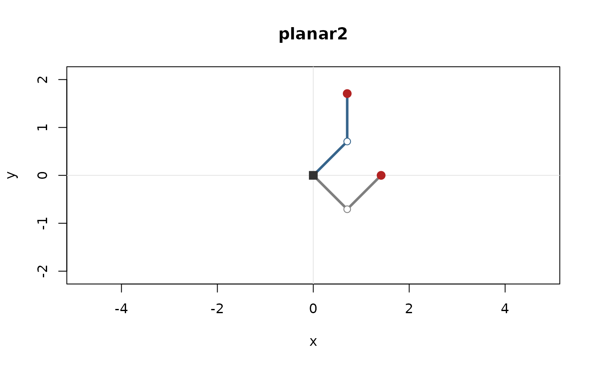

Draws the kinematic skeleton of a robot with base graphics: links as
segments between consecutive frame origins, joints as points and the
end effector as a filled marker. Planar projections ("xy", "xz",
"yz") are exact orthographic views; "3d" uses a perspective view
set by theta and phi as in graphics::persp(). Several
configurations can be overlaid with add = TRUE. Works on any graphics
device, including headless ones.
robot_plot(
robot,
q,
projection = c("xy", "xz", "yz", "3d"),
frames = FALSE,
frame_scale = NULL,
add = FALSE,
col = "steelblue4",
lwd = 3,
xlim = NULL,
ylim = NULL,
theta = 30,
phi = 20,
main = NULL,
...
)A robot_model.
Configuration.
"xy", "xz", "yz", or "3d".
Draw coordinate axes of each link frame (red x, green y, blue z).
Length of the frame axes.
Add to the current plot.
Link color.
Link line width.
Optional axis limits for planar projections.
Viewing angles for "3d".
Plot title.
Further arguments passed to graphics::plot().
Invisibly, the matrix of projected link origins.
robot <- robot_example("planar2")
robot_plot(robot, c(pi / 4, pi / 4))
robot_plot(robot, c(-pi / 4, pi / 2), add = TRUE, col = "grey50")
